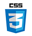
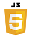
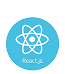
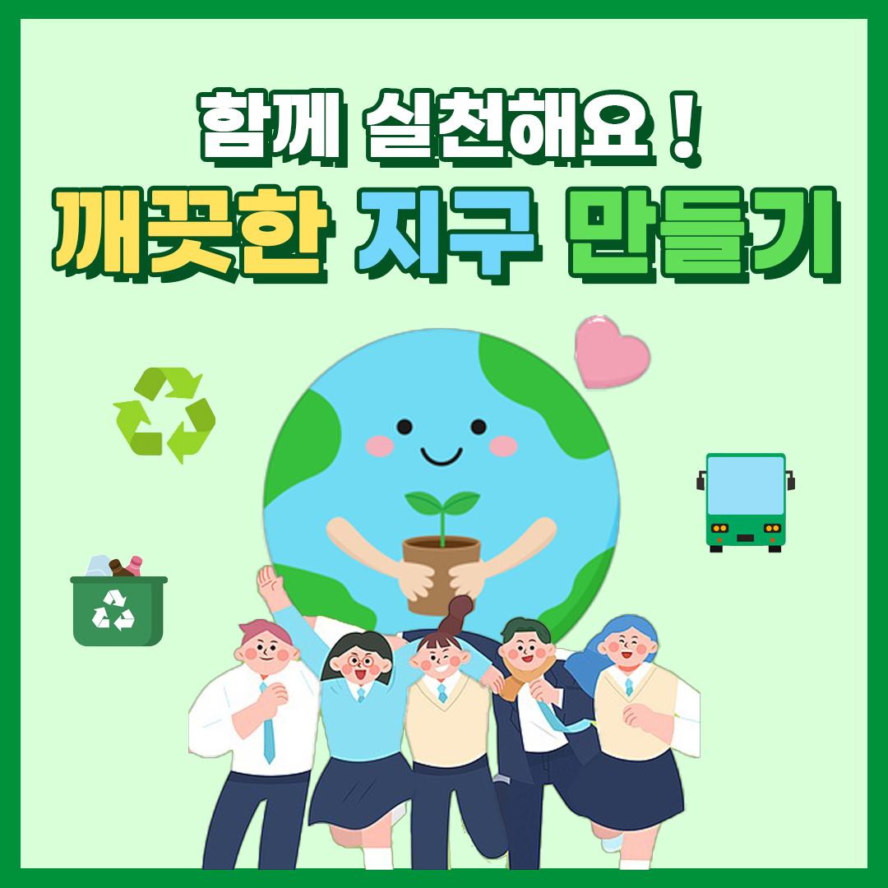
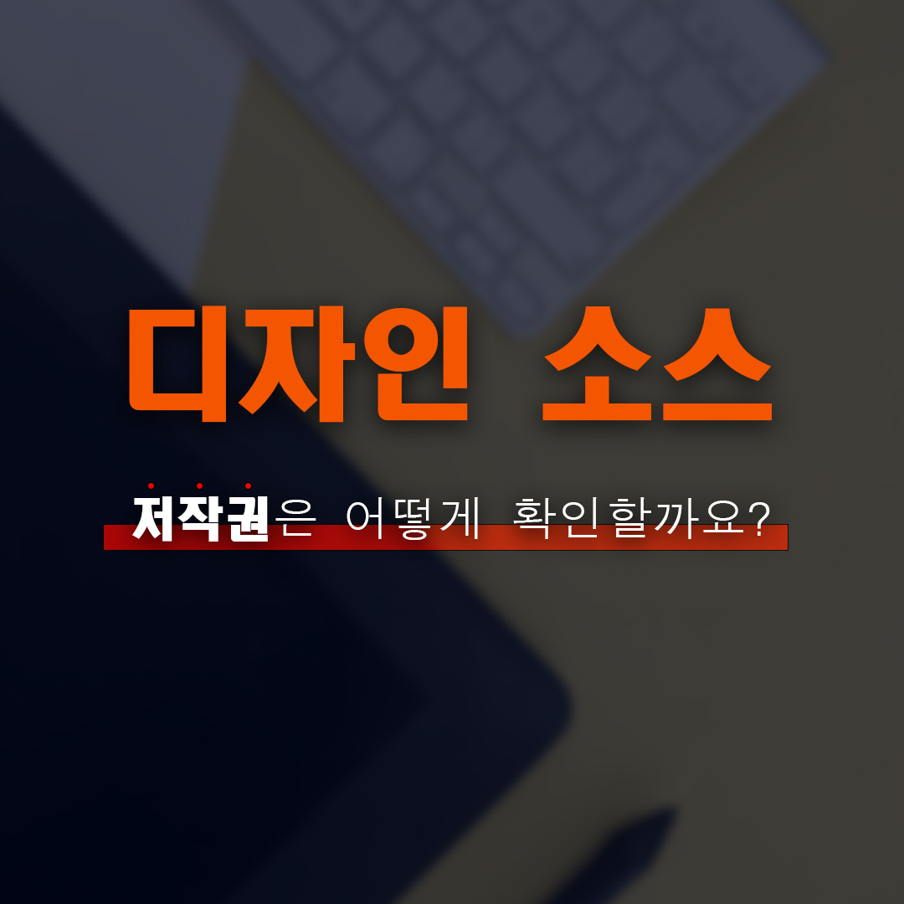
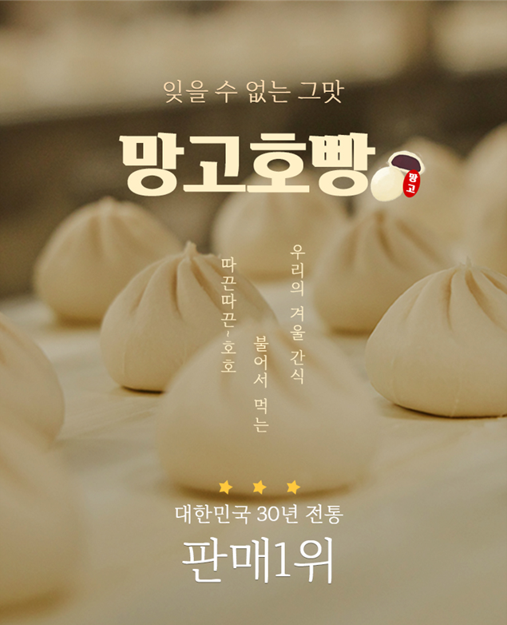
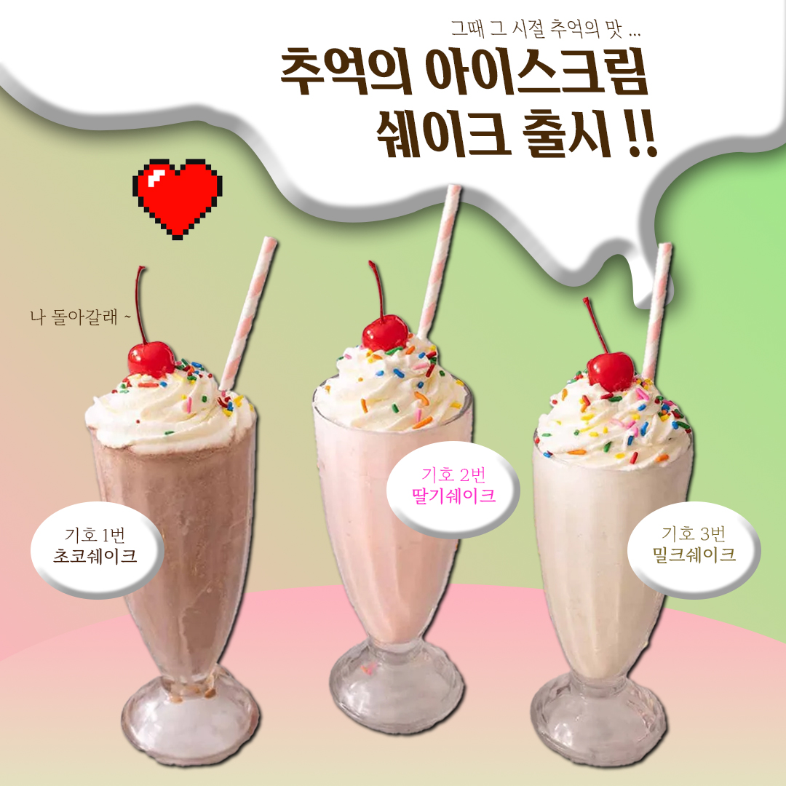
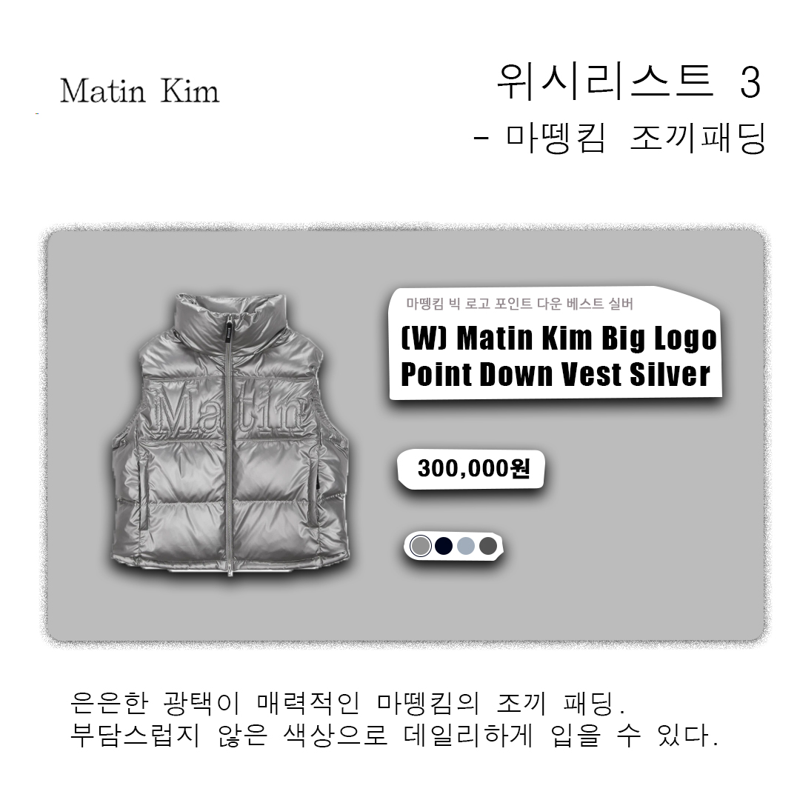
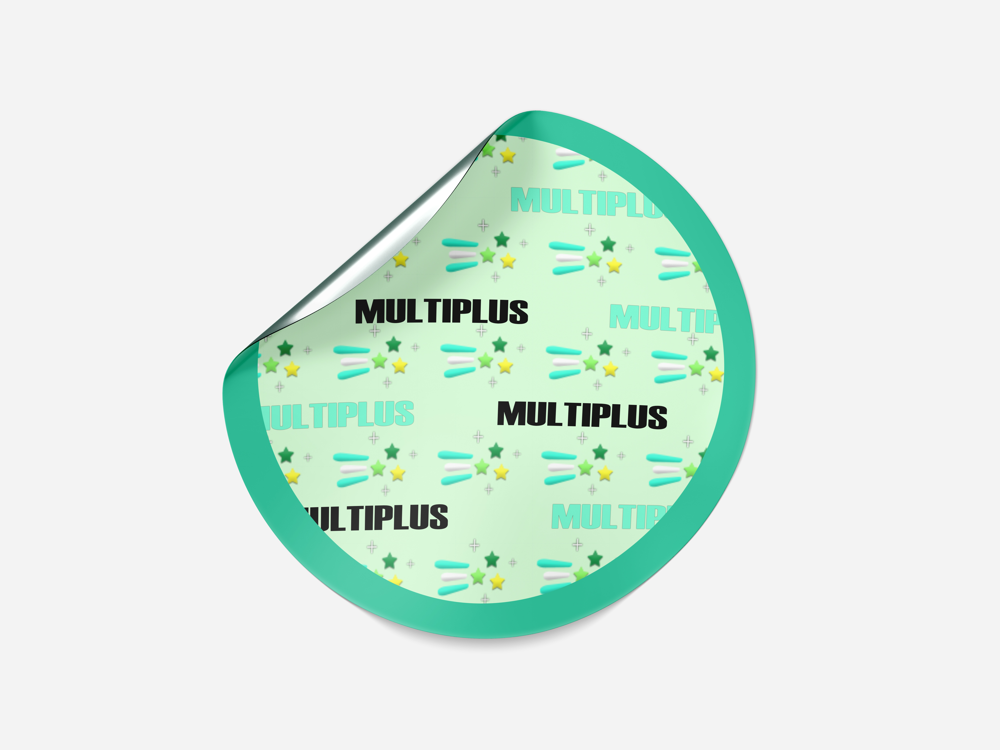

Intro
PUBLISHER
PORTFOLIO
논리적인 정보구성과 의미(Semantic)에 맞는 명령어, 웹표준 웹접근성을 준수합니다.
- Logical
- Information
- Web standards
- Web accessibility
- HTML
- CSS
- Javascript
- jquery
Profile
열정 가득~ 웹 퍼블리셔 권도현!
누구나 이해하기 쉽고 동등한 정보를 제공 받을 수 있도록 퍼블리싱을 진행합니다
안녕하세요. 사용자 중심의 웹 경험을 만들어가는 웹 퍼블리셔 권도현 입니다.
저는 책임감을 가장 중요한 덕목으로 여기며, 맡은 프로젝트는 끝까지 완성도 높게 마무리하는 것을 원칙으로 삼고 있습니다.
세부 마감일을 준수하고 코드의 일관성과 효율성을 유지하기 위해 끊임없이 노력하고 있습니다.
또한, 소통의 중요성을 누구보다 잘 알고 있습니다. 디자이너, 개발자, 기획자와의 원활한 협업을 통해 더 나은 결과물을 도출할 수 있다고 믿습니다.
의견을 경청하고, 제 아이디어를 논리적으로 전달하며 팀워크를 다져왔습니다. 문제가 생겼을 때는 긍정적인 태도로 접근하여 빠르게 원인을 분석하고 해결책을 찾아갑니다.
예상치 못한 이슈에도 유연하게 대응하며, 그 과정에서 오히려 더 나은 방향을 발견하는 경우도 많았습니다. 또한 다양한 프로젝트를 경험하며 문제해결 능력과 유연성을
길러왔습니다. 정적인 웹사이트 뿐 아니라 반응형, 웹접근성, 퍼포먼스 최적화 등 다양한 요구사항에 능동적으로 대응하며 실무 경험을 쌓았습니다.
앞으로도 끊임없이 배우고 성장하며, 사용자에게 가치 있는 웹 경험을 제공하는 퍼블리셔가 되겠습니다. 감사합니다.
- Dohyeon Kwon
- 010 4651 6826
- rnjsehgus25@naver.com
- #도전적
- #책임감
- #소통력
- #배움
- #긍정적
- #문제해결
- #신뢰성
- #유연성
- #정직한
Skills
다양한 언어를 다룰 줄 아는 웹 퍼블리셔
HTMl, CSS, JavaScript, jQuery, React / FIGMA & PHOTOSHOP
- 
- 
- 
Portfolio
Clone Coding
1.
Netflix
Netflix의 주요 기능을 모방하여 React를 활용한 웹 애플리케이션을 개발하였습니다.
UI/UX 구현 능력, 비동기 데이터 처리를 강조하였으며, Figma를 이용한 디자인 구축 후 코드를 구현.
- React, React Router, TMdb API 연동
- Axios, react-slick, scss, icon-icon 플러그인 활용
- 제작 기간(5일 / 협업 프로젝트)
- 기획, UI디자인, 개발, 배포까지 전 과정 직접 수행
2.
Osulloc
HTML+CSS를 활용하여 PC 및 모바일 반응형을 통해 사용자 경험을 고려한 사이트를 개발하였습니다.
UI/UX 구현 능력, Figma를 이용한 디자인 구축 후 코드를 구현.
- HTML5, CSS3, jQuery 연동
- FontAsome 플러그인 활용
- 제작 기간(4일 / 100% 개인 프로젝트)
- 기획, UI디자인, 개발, 배포까지 전 과정 직접 수행
3.
Airbnb
반응형 웹 디자인, 웹 표준 및 접근성 준수를 중심으로 개발하여 다양한 디바이스에서 최적화 된 사용자 경험을 제공하도록 개발하였습니다.
UI/UX 구현 능력, Figma를 이용한 디자인 구축 후 코드를 구현.
- HTML5, CSS3 연동
- icon-icons 플러그인 활용
- 제작 기간(2일 / 100% 개인 프로젝트)
- 기획, UI디자인, 개발, 배포까지 전 과정 직접 수행
4.
Telsa
실제 테슬라 웹사이트의 레이아웃과 애니메이션을 반영하여 반응형 디자인, 웹 표준 및 접근성 준수를 중심으로 개발하였습니다.
UI/UX 구현 능력, Figma를 이용한 디자인 구축 후 코드를 구현.
- HTML5, CSS3 연동
- FontAsome, GoogleFont 플러그인 활용
- 제작 기간(5일 / 100% 개인 프로젝트)
- 기획, UI디자인, 개발, 배포까지 전 과정 직접 수행
Pratical Publishing
UI/UX Design
친환경 캠페인 카드뉴스
저작권 카드뉴스
상세페이지 작업
카페 신메뉴 카드뉴스
위시리스트 카드뉴스
스티커 목업

Javascript